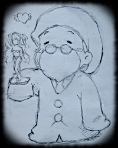

✒️ ON AIR #001 あとがき
2026年11月 記
というわけで、「宇宙よろず相談室」、最後まで見て（聴いて）いただき、ありがとうございました‼️‼️‼️
一応作者の、木村晃士です！
Dr.YOU とユニちゃんによるスピリチュアル・ラジオ番組、あなたにも楽しんでもらえたなら嬉しいのですけど、どーでしょね☺️

まず、ON AIR #001 が生まれたきっかけをば。
（本作全体のきっかけについては、UNI-CH、誕生秘話 をご覧ください）
私の創作手順では、まず始めに「キャラクター」を作ります。
作者の意思とは無関係に自由に動きしゃべるキャラクター（周波数）を。
私の好みとして、教える側のキャラクターが偉そうなのは得意ではないので、思いっきし「おバカ」にします。
書いていて楽しかった「とも◯び仙人」というエッチでおバカなキャラクターがいたな…
よし、セルフ・オマージュしよう！
うん、今回は形而上学者のオタク廃人とか、めっちゃ楽しそーだぞ♪
というわけで、Dr.YOU が生まれました。
（外側の権威が教えてくれるのではなく、彼は「あなた自身」だという意味を込めて「Dr.YOU」という名になりました）
ユニちゃん社長がうさぎの着ぐるみを着ているのも、と◯しび仙人の相方がうさぎだったからという、ただそれだけの理由🤭

ひょいと Dr.YOU のデザインを試し描きしたら、なんか勝手に「萌えフィギュア」を持っていたので、自動的に今回の「偶像崇拝」というテーマが生まれました。
まあ、第1回目のテーマとしては、偶像崇拝なんてマニアックすぎるなあ…と思ったのですが、理屈の声は無視して勢いで GO！
ふたりが勝手に動いて、大満足の面白い内容になりました🎵
今後も基本的に1話完結方式で、それを全話無料で配信します。
「じゃあ、継続していくための収益はどーするの？」と思われるかもしれませんが、毎回番外編として「配信後の楽屋裏（有料）」を用意します。
楽屋裏は、「本配信を気に入ってくださった方向けのファンサービス」として、ユル〜いお遊び的な位置づけです。
ON AIR #001 のアヤシイ楽屋裏はサンプルとして無料にしていますので、よろしければ続けてお楽しみください😉⭐
ON AIR #001 楽屋裏（制作中、未リンク）